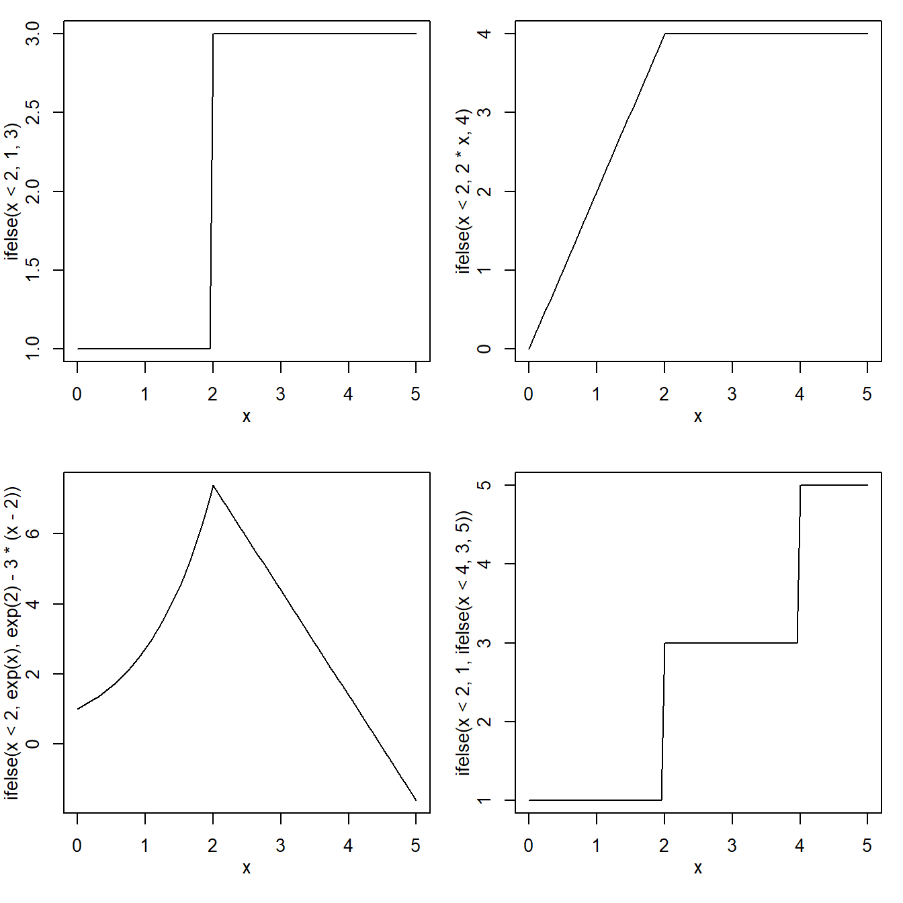

Lab 3: Analyzing functions
1 Learning goals
In this lab you will learn to analyse mathematical functions. This is an important step in ecological modelling. Next, we proceed with analysing and programming these functions in R. To do so, you will need more advanced programming skills such as for-loops, if-else statements and functions.
2 Essential analytical skills
The models that we will be fitting to data are composed of a deterministic component and a stochastic component. The deterministic component describes the expected pattern in absence of any randomness. You are not restricted to linear functions (as in linear regression) but you can choose among different functions.
Remember that functions can be purely phenomological or mechanistic (see p.21 of Bolker). Bolker mentions the following non-linear functions in his chapter about a bestiary of functions: Hyperbolic, Michaelis-Menten (=Monod or Holling type II), Holling type III, Holling type IV, negative exponential, monomolecular (=limited exponential growth), Ricker, logistic, power law, von Bertalanffy, Sheppard, Hassell, non-rectangular hyperbola.
To choose a function one needs to be able to analyse its behaviour, in particular what happens to function values close to zero and when x goes to infinity.
A series of connected and sequential exercises will be given. These exercises are based on the dataset ‘shapes.xlsx’ and contains six different datasets, of which only the first two will be used in this exercise, but if you want to practice more, you can do the exercise below for the remaining four as well.
To make yourself familiar with a number of deterministic functions, you are asked to take a number of steps: read in a dataset into R, make plots of the first two datasets and choose at least two appropriate functions for each dataset. Next, you will explore the properties of the selected functions after which you will choose appropriate parameter values through eyeballing so you get a reasonable fit between the data and the choosen function.
+ _hint 1_: dataset 1 describes a light response curve of ten individual plants
+ _hint 2_: dataset 2 describes the intake rate of a predator as a function of prey density
+ _hint 3_: dataset 3 the data describe an allometric relationship
+ _hint 4_: dataset 4 contains measurements of population size over time
+ _hint 5_: This dataset you need to figure out for yourselves.
+ _hint 6_: **optional** dataset 6 a species response curve (presence/absence). Fit a model that models the probability of presence (use google to find a good one).The following exercise is a must; each written exam contains a question that is like it.
Exercise 3. 2.1
Choose (at least) two appropriate functions based on the type of data or the shape of the data.
Explore the properties of the selected functions in the following steps:
What is the value of \(f(0)\) and \(f'(0)\)?
What are the limits for \(x\to\infty\) for \(f(x)\) and \(f'(x)\)
What are the limits for \(x\to-\infty\) for \(f(x)\) and \(f'(x)\)
If \(f(x)\) saturates at, say the value \(a\), for \(x\to\infty\) then determine the \(x\)-value \(x_1\) at which \(f(x_1)=\frac{a}{2}\). If \(f(x)\) obtains a maximum value, find the \(x\) and \(y\) coordinate of the maximum.
3 Eyeballing
After you have chosen an analytical function, and you have done the necessary math, you are able to eyeball (make an educated guess) of the parameter values of the function so it reasonably fit the data. This step is necessary for two reasons: 1) if you have fitted the function to the data through formal procedures (minimizing sum of squares, or by maximization of the likelihood, Ch. 6) you can easily check whether the resulting parameter values make sense. 2) optimizers (algorithms that seek to find the best fitting curve through changes parameter values in a clever way) will be better able to find the best set of parameters if you give them a reasonable starting values
3.1 Plotting curves
Here are the R commands used to generate Figure 3.2 in the book (p 74). They just use curve(), with add=FALSE (the default, which draws a new plot) and add=TRUE (adds the curve to an existing plot), particular values of from and to, and various graphical parameters (ylim, ylab, lty).
curve(2*exp(-x/2),from=0,to=7,ylim=c(0,2),ylab="")
curve(2*exp(-x),add=TRUE,lty=4)
curve(x*exp(-x/2),add=TRUE,lty=2)
curve(2*x*exp(-x/2),add=TRUE,lty=3)
text(0.4,1.9,expression(paste("exponential: ",2*e^(-x/2))),adj=0)
text(4,.5,expression(paste("Ricker: ",x*e^(-x/2))))
text(4,1,expression(paste("Ricker: ",2*x*e^(-x/2))),adj=0)
text(2.8,0,expression(paste("exponential: ",2*e^(-x))))The only new thing in this figure is the use of expression() to add a mathematical formula to an R graphic. text(x,y,"x^2") puts x^2 on the graph at position \((x,y)\); text(x,y,expression(x^2)) (no quotation marks) puts \(x^2\) on the graph. See ?plotmath or ?demo(plotmath) for (much) more information.
An alternate way of plotting the exponential parts of this curve:
xvec = seq(0,7,length=100)
exp1_vec = 2*exp(-xvec/2)
exp2_vec = 2*exp(-xvec)plot(xvec,exp1_vec,type="l",ylim=c(0,2),ylab="")
lines(xvec,exp2_vec,lty=4)Finally, if you have a more complicated function you could use sapply() to call this function along with appropriate parameter values. you could say:
expfun = function(x,a=1,b=1) {
a*exp(-b*x)
}
exp1_vec = sapply(xvec,expfun,a=2,b=1/2)
exp2_vec = sapply(xvec,expfun,a=2,b=1)The advantage of curve() is that you don’t have to define any vectors: the advantage of doing things the other way arises when you want to keep the vectors around to do other calculations with them.
Exercise 3. 3.1
R, and explain how you got there.
Exercise 3. 3.2
curve.
Exercise 3. 3.3
4 Modelling functions and calculating outcomes
4.1 For loops
When programming your data analysis, you often need to iterate over multiple elements of a collection. These elements could be rows of a data.frame, datasets inside a list, numbers inside a vector, etc. The iteration usually means that you apply the same code over each element of the collection and you don’t want to “copy-paste” the code for each element. Iterating over a collection is called a “for loop” in programming. A for loop consists of three components:
A collection over which you want to iterate.
A variable that keeps track of where you are in the collection in each iteration
The body of the loop where you apply some code.
Imagine that you want to calculate the factorial of 10. The factorial of a number is simply the product of all positive numbers smaller or equal than the number you specify (and it is denote with a “!” after the number). For example, the factorial of 3 is \(3! = 3 \times 2 \times 1\). A simple way of calculating the factorial of 10 by using a for loop is:
result = 1
for(i in 1:10) {
result = result*i
}In this for loop, the collection is 1:10, the variable to keep track of the number is i and the body of the loop is result = result*i. This for loop shows a very typical pattern: we want to summarise some collection of numbers into a single number, in this case, result.
Another typical pattern is when we want to calculate the elements of a collection. In this case, it is a good practice to “pre-allocate” your output collection before looping, so R knows how much memory to allocate for this vector. For example,
x = 1:10
y = numeric(10)
for(i in 1:10) {
y[i] = exp(x[i])
}In this case, the result of the for loop (y) is a collection of 10 elements where each element is the exponential transformation of the element in x with the same position. Note that we specify before the loop that y will have 10 elements. Although this is not strictly required in this case, it is a good practice both to avoid errors and to make your code run faster.
For loops are not that common in R as in other languages The reason is that many mathematical and statistical functions are already, implicitly, looping over your collections. For examples, when you take the exponential (exp()) of a collection of numbers, it will produce a new collection which is the result of looping over the original collection. That is:
x = 1:10
y = exp(x)is equivalent to the previous loop described before. As you can see, this second option requires less code and it is easier to read, which is one of the reasons why R is such a greate language for working with data. In addition, if you rely on this implicit looping your code will run much faster.
However, there may be situations where you really cannot avoid a for loop. For example, if you have collected multiple datasets and need to perform the same analysis on each dataset, you could store your datasets in a list and use a for loop to iterate over the different datasets.
Exercise 3. 4.1
4.2 Handling missing values (NA)
Missing values in data collection and analysis deserve special attention. You can get missing values during you data collection for various reasons, e.g. you missed the opportunity to take a measurement, you lose one of the replicates due to contamination, you wrote down a wrong value, or you even lost some of your data.
The most important thing you need to understand, is that in almost all cases of a missing value, you should not represent a missing value with a zero (0). This will throw your analysis out of balance and give erroneous results. A common way of representing missing data when you are performing data input, would be with a character like an asterisk (*) or a hyphen (-).
Many of the functions that read data in R have an argument that allows you to select how you have represented a missing-value in your data. As an example the function read.csv (which reads a comma-delimited data file) would be used like this to read from a file named “your-data-file”:
myData <- read.csv("you-data-file", na.strings=c("*","-") )In this case we instructed R, with the argument na.strings=c("*","_") to read our file, and substitute any occurence of an asterisk (*) or a hyphen(-) with an NA symbol.
The R languages has a special way of representing missing values in a dataset. A missing value is denoted with the symbol NA which stands for “Not Available”. By default, missing values will “propagate” throughout the calculations. For example, given two vectors of data:
x = c(1,2,3)
y = c(2,4,NA)When you combine these vectors (e.g. add them or multiply them) you will see that the third component is always NA
x + y[1] 3 6 NAx*y[1] 2 8 NAWhen you calculate some statistical property of your data (e.g. mean, standard deviation) it will, by default, report NA if there is at least one missing value in your data
mean(x)[1] 2mean(y)[1] NAMost statistical functions in R allow you to specify how to deal with missing values. Most often, you are given the option to ignore any missing values from the data when calculating an statistical property through an argument often called na.rm. For example, in order to get the mean of the non-missing values of y we need:
mean(y, na.rm = TRUE)[1] 3which, of course, is the mean of 2 and 4. However, other functions not have an option to handle NA even though you still need to make a decision on how to deal with them. For example, when you calculate the length of a dataset (length()) do you want to consider the whole data or only the non-missing values? This is not a trivial question and the answer on the context where you will use the result. In any case, if you want to remove the NA when calculating the length you need to be more creative. Fortunately, R offers the function is.na which returns a vector of TRUE or FALSE values corresponding to the index of mssing or non-missing data values in the vector y:
is.na(y)[1] FALSE FALSE TRUENext a vector without NA can be obtained through:
length(y[!is.na(y)])[1] 2Which only gives 2 as the third element is missing. Remember that ! is a negation operator, so !is.na actually means “is not NA”.
By the way, you should not confuse NA with NaN which stands for “Not a Number”. An NaN is the result of either an expression with indeterminate form (e.g. 0/0 or Inf/Inf) or when a function is evaluated outside of its valid domain (e.g. sqrt(-1) or log(-1)).
Exercise 3. 4.2
c(25,1,10,89, NA, NA), calculate the mean value and the standard error of this mean (\(s.e.m. = \sigma/\sqrt{n}\), where \(\sigma\) is the standard deviation and \(n\) is the number of items) by ignoring missing values.
4.3 Making a function
When you want to repeat a calculation for different data, it is best to code your calculations inside a function. R consists of many built-in functions, but sometimes you need to do a calculation that is not available in R. A function is defined by 4 elements
The name of the function. For example, in
Rthere is a function that calculates the arithmetic mean of a vector of data and its name ismean. You should make sure that the name of your function does not coincide with existing functions, that it is not too long and that it conveys its meaning. You can check if a function already exist in the base or any of the packages you loaded through?nameoffunction.The arguments of the function. These are the variables that you need to pass to the function (i.e., inputs). The arguments are defined by a position and a name. Also, some arguments may have default values which means that you do not need to specify them every time you call the function. For example, the function
mean, contains three arguments (x,trimandna.rm) but the last two have default values.The body of the function. This is the actual code that the function will execute. The real
meanfunction in R has some crytpic body that requires advanced knowledge of the language to understand. However, a more “naive” implementation ofmeancould besum(x)/length(x). Note that the body of a function can consist of multiple lines.The return value of the function. This is the result of applying the function on the arguments. By default, the result of the last line code in the body of the function is the return value of the function. You can also return from any point in the body with the function
return()with the variable you want to return inside.
The R language specifies a particular syntax on how to build a function. For example, a naive_mean could be defined as:
naive_mean = function(x, na.remove = FALSE) {
total = sum(x, na.rm = na.remove)
n = length(x[!is.na(x)])
result = total/n
return(result)
}In this case, the function naive_mean has two arguments (x and na.remove) where the second argument has a default value of FALSE and the body consists of several lines of code. These are respectively the sum of the elements of x with the na.rm depending on whether you specified TRUE or FALSE in the na.remove argument; n that calculates the length of the vector x without NAs, and the calculation of the mean. The last statement returns the result. Notice that arguments are separated by commas and the body of the function is enclosed in curly braces {}. The name of the function is simply the name of the variable to which you assigned the function (i.e., naive_mean). You can see below that you can use this function in a similar manner to the built-in mean
x = 1:10
naive_mean(x)[1] 5.5Notice that we did not specify the value of na.remove as the default is ok in this case. However, if we had missing values, the NA would propagate to the output:
x = c(1,2,NA,4)
naive_mean(x)[1] NASpecifying na.remove=FALSE can be used as a double check that there are no NAs in your vector. If they are present it forces us to make a decision about what to do with the NAs. Let’s say that, for the moment, we want to just remove the values that are NA from the calculation. In this case, we just change the value of the default parameter.
naive_mean(x, na.remove = TRUE)[1] 2.333333For convenience, default parameters are specified by name rather than position. However we could have also said naive_mean(x,TRUE) or even naive_mean(x = x, na.remove = TRUE). All these forms of calling functions are OK, whether you choose one style or another is a matter of taste.
Exercise 3. 4.3
sd.
Suprisingly the base R does not have a built in function for the standard error of the mean (s.e.m.). The sem is defined as \(\frac{\sigma}{\sqrt(n)}\).
Exercise 3. 4.4
As you see you can call functions inside functions. It is recommended to divide the work you want to do into little functions that each carry out a specific task, and then combine those functions into a larger function that combines these tasks. This facilitates error checking.
5 A quick digression: ifelse() for piecewise functions
The ifelse() command in R is useful for constructing piecewise functions. Its basic syntax is ifelse(condition,value_if_true,value_if_false), where condition is a logical vector (e.g. x>0), value_if_true is a vector of alternatives to use if condition is TRUE, and value_if_false is a vector of alternatives to use if condition is FALSE. If you specify just one value, it will be expanded (recycled in R jargon) to be the right length. A simple example:
x=c(-25,-16,-9,-4,-1,0,1,4,9,16,25)
sqrt(ifelse(x<0,0,x)) [1] 0 0 0 0 0 0 1 2 3 4 5if you said ifelse(x<0,0,sqrt(x))) you would get a warning: why)
Here are some examples of using ifelse() to generate (1) a simple threshold; (2) a Holling type I or “hockey stick”; (3) a more complicated piecewise model that grows exponentially and then decreases linearly; (4) a double-threshold model. When plotting functions with abrubt changes with the function curve, beware that curve draws a line by evaluating a functions at several locations along the specified interval (from, to). You can increase these number of points by specifying n. The default value for n is 101.
op=par(mfrow=c(2,2),mgp=c(2,1,0),mar=c(4.2,3,1,1))
curve(ifelse(x<2,1,3),from=0,to=5)
curve(ifelse(x<2,2*x,4),from=0,to=5)
curve(ifelse(x<2,exp(x),exp(2)-3*(x-2)),from=0,to=5)
curve(ifelse(x<2,1,ifelse(x<4,3,5)),from=0,to=5)
The double-threshold example (nested ifelse() commands) probably needs more explanation. In words, this command would go “if \(x\) is less than 2, set \(y\) to 1; otherwise (\(x \ge 2\)), if \(x\) is less than 4 (i.e. \(2 \le x<4\)), set \(y\) to 3; otherwise (\(x \ge 4\)), set \(y\) to 5”.
6 Evaluating derivatives in R
R can evaluate derivatives, but it is not very good at simplifying them. In order for R to know that you really mean (e.g) x^2 to be a mathematical expression and not a calculation for R to try to do (and either fill in the current value of x or give an error that x is undefined), you have to specify it as expression(x^2); you also have to tell R (in quotation marks) what variable you want to differentiate with respect to:
d1 = D(expression(x^2),"x"); d12 * xUse eval() to fill in a list of particular values for which you want a numeric answer:
eval(d1,list(x=2))[1] 4Taking the second derivative:
D(d1,"x")[1] 2(As of version 2.0.1,) R knows how to take the derivatives of expressions including all the basic arithmetic operators; exponentials and logarithms; trigonometric inverse trig, and hyperbolic trig functions; square roots; and normal (Gaussian) density and cumulative density functions; and gamma and log-gamma functions. You’re on your own for anything else (consider using a symbolic algebra package like Mathematica or Maple, at least to check your answers, if your problem is very complicated). deriv() is a slightly more complicated version of D() that is useful for incorporating the results of differentiation into functions: see the help page.